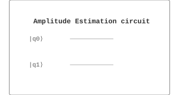

Algorithms / 算法 | 难度：高级 | 预计时间：20 分钟
振幅估计用于估计量子算法的成功概率。
经典方法需要多次采样才能估计概率
对于小概率事件，经典方法效率低
经典方法的精度受限于采样次数
振幅估计只需要 \(O(1/\epsilon)\) 次查询
提供二次加速
是量子算法分析的基础
量子算法分析
量子优化
量子机器学习
from quonic.algorithms import amplitude_estimation
# 估计目标态的概率
result = amplitude_estimation(target='11', n_qubits=2)
print(f'Estimate: {result.estimate}')
print(f'Phase: {result.phase}')预期输出：
Estimate: 0.5
Phase: 0.25
Step 1: 振幅放大算子
振幅放大算子： \[\begin{equation} Q = D \cdot O \end{equation}\]
其中 \(D\) 是扩散算子，\(O\) 是 Oracle。
Step 2: 本征值
\(Q\) 的本征值： \[\begin{equation} Q|\psi_\pm\rangle = e^{\pm 2i\theta}|\psi_\pm\rangle \end{equation}\]
其中 \(\sin\theta = \sqrt{p}\)，\(p\) 是目标态的概率。
Step 3: QPE 估计相位
使用 QPE 估计相位 \(\theta\)： \[\begin{equation} |0\rangle|\psi\rangle \to |\tilde{\theta}\rangle|\psi\rangle \end{equation}\]
Step 4: 计算概率
计算概率： \[\begin{equation} p = \sin^2(\theta) \end{equation}\]
Step 5: 精度
精度： \[\begin{equation} \epsilon = O(1/M) \end{equation}\]
其中 \(M\) 是控制量子比特数。
振幅估计在 Bloch 球上估计旋转角度，从而推算成功概率。
from quonic.algorithms import amplitude_estimation
# amplitude_estimation(target, n_qubits, precision)
# target: 目标态
# n_qubits: 量子比特数
# precision: 精度量子比特数
result = amplitude_estimation(
target='11',
n_qubits=2,
precision=3
)
# result.estimate: 估计的概率
# result.phase: 估计的相位
# result.circuit: 量子电路
print(f'Estimate: {result.estimate}')
print(f'Phase: {result.phase}')使用振幅估计计算满足条件的解的数量：
from quonic.algorithms import amplitude_estimation
import numpy as np
# 问题：计算 3-bit 数中奇数的个数
# 总共有 2^3 = 8 个数
# 奇数：001, 011, 101, 111（4 个）
n_qubits = 3
target = '111' # 任意一个奇数
# 使用振幅估计
result = amplitude_estimation(
target=target,
n_qubits=n_qubits,
precision=4
)
# 计算奇数的比例
odd_ratio = result.estimate
total_numbers = 2**n_qubits
odd_count = int(odd_ratio * total_numbers)
print(f'Total numbers: {total_numbers}')
print(f'Estimated odd ratio: {odd_ratio:.4f}')
print(f'Estimated odd count: {odd_count}')
print(f'Actual odd count: 4')
print(f'Error: {abs(odd_count - 4)}')
# 分析：振幅估计可以高效计算满足条件的元素数量
# 经典方法需要遍历所有元素，量子方法只需要 O(sqrt(N)) 次查询估计优化问题中找到最优解的概率：
from quonic.algorithms import amplitude_estimation, amplitude_amplification
import numpy as np
# 问题：在 4x4 矩阵中找到最大值的位置
matrix = np.random.randint(1, 100, (4, 4))
max_pos = np.unravel_index(matrix.argmax(), matrix.shape)
print(f'Matrix:\n{matrix}')
print(f'Maximum at: {max_pos}, value: {matrix[max_pos]}')
# 将问题编码为量子搜索
# 目标态：最大值的位置
target = format(max_pos[0] * 4 + max_pos[1], '04b')
# 使用振幅估计估计找到最大值的概率
n_qubits = 4
result = amplitude_estimation(
target=target,
n_qubits=n_qubits,
precision=3
)
print(f'\\nTarget state: |{target}>')
print(f'Estimated probability: {result.estimate:.4f}')
print(f'Expected probability: {1/16:.4f}') # 均匀分布
# 使用振幅放大提高找到最大值的概率
amplified = amplitude_amplification(
target=target,
n_qubits=n_qubits,
iterations=3
)
print(f'\\nAfter amplitude amplification:')
print(f'Probability: {amplified.probability:.4f}')
# 分析：
# - 振幅估计可以估计成功概率
# - 振幅放大可以提高成功概率
# - 两者结合可以高效解决优化问题使用振幅估计进行量子贝叶斯推断：
from quonic.algorithms import amplitude_estimation
import numpy as np
# 问题：估计硬币正面朝上的概率
# 先验：均匀分布 [0, 1]
# 数据：10 次投掷，7 次正面
# 将连续参数离散化
n_qubits = 4 # 16 个可能的概率值
prob_values = np.linspace(0, 1, 2**n_qubits)
# 计算每个概率值的似然
data = [1, 1, 1, 0, 1, 1, 0, 1, 1, 1] # 7 个正面，3 个反面
n_heads = sum(data)
n_tails = len(data) - n_heads
likelihoods = []
for p in prob_values:
# 二项分布似然
L = p**n_heads * (1-p)**n_tails
likelihoods.append(L)
# 归一化
likelihoods = np.array(likelihoods)
likelihoods /= likelihoods.sum()
# 使用振幅估计计算后验概率
# 这里简化：直接计算后验
posterior = likelihoods # 均匀先验下，后验正比于似然
# 找到 MAP 估计
map_idx = np.argmax(posterior)
map_estimate = prob_values[map_idx]
print(f'Data: {n_heads} heads, {n_tails} tails')
print(f'MAP estimate: {map_estimate:.4f}')
print(f'True probability: {n_heads/len(data):.4f}')
# 量子优势：
# - 可以高效计算后验分布
# - 对于高维参数空间，量子方法更快振幅估计可以用于评估量子算法的性能。例如，在 Grover 搜索中，振幅估计可以精确计算找到目标的概率，而不需要多次运行算法。这对于优化算法参数、评估算法效率非常重要。
振幅估计可以用于求解优化问题。例如，在组合优化中，振幅估计可以估计最优解的数量和位置。在机器学习中，振幅估计可以估计模型的置信度。这对于决策支持、风险评估非常重要。
振幅估计可以用于量子化学计算。例如，估计分子基态能量、计算反应速率等。振幅估计可以提供比经典方法更精确的结果，对于药物设计、材料科学非常重要。
振幅估计可以用于金融风险评估。例如，估计投资组合的风险价值（VaR）、计算期权价格等。振幅估计可以处理高维概率分布，对于复杂金融产品的风险评估非常重要。
振幅估计可以用于量子机器学习中的概率估计。
振幅估计估计概率，振幅放大放大概率。
精度取决于控制量子比特的数量。更多的控制量子比特提供更高的精度。
需要 \(n + m\) 个量子比特，其中 \(n\) 是目标量子比特数，\(m\) 是精度量子比特数。
振幅放大
量子相位估计
量子傅里叶变换
量子计数
量子优化
量子机器学习
from quonic.algorithms import amplitude_estimation
result = amplitude_estimation(target='11', n_qubits=2)
print(f'Estimate: {result.estimate}')(https://github.com/ChrisLee0721/QuoNic/blob/main/examples/amplitude_estimation/amplitude_estimation.py)